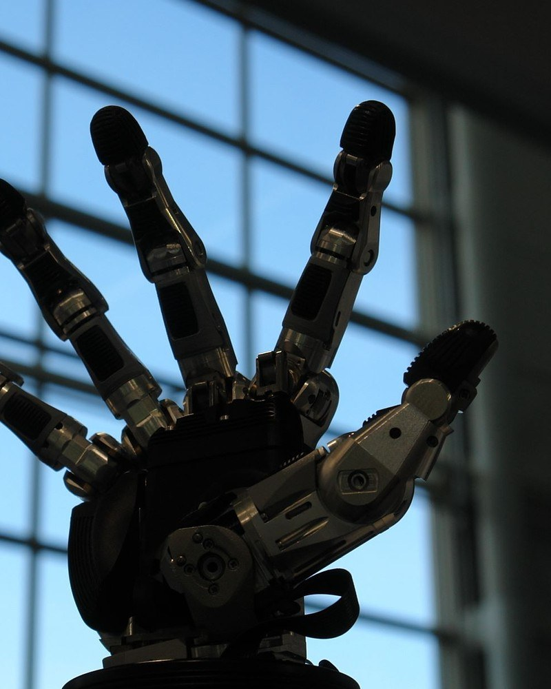
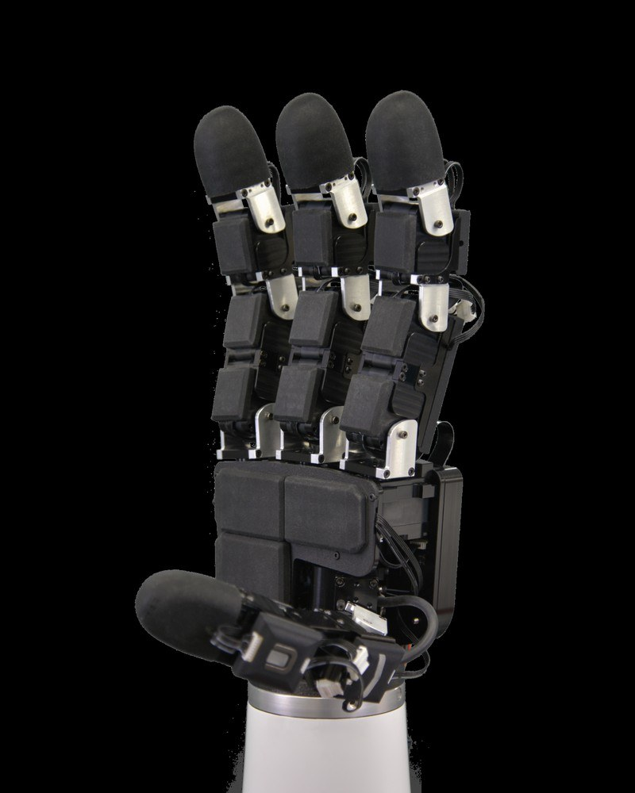
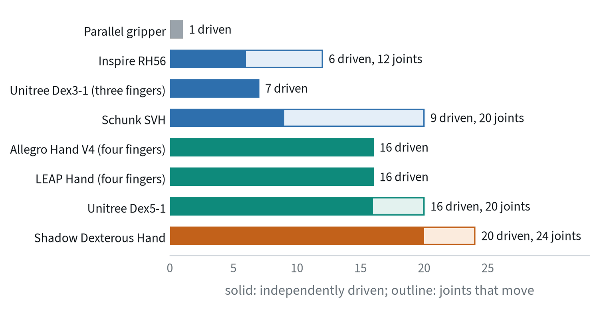
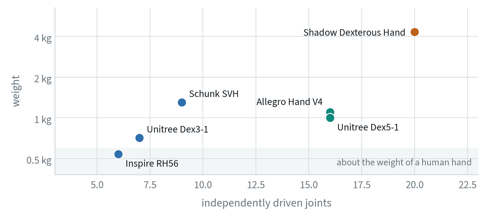
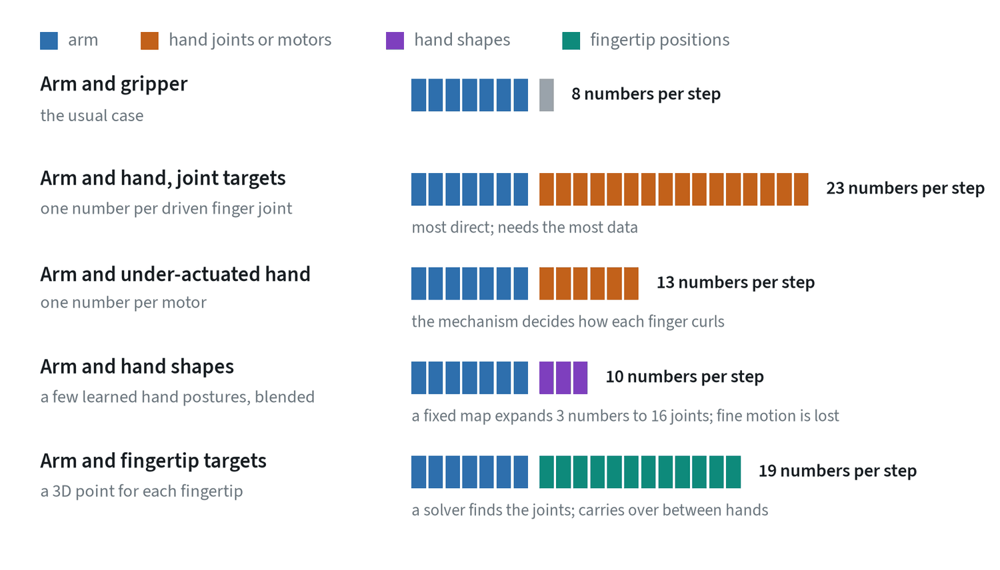
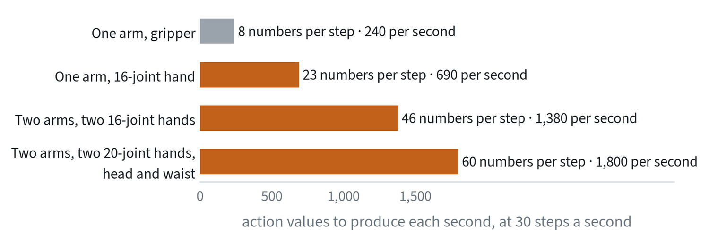
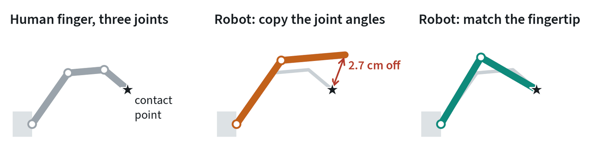
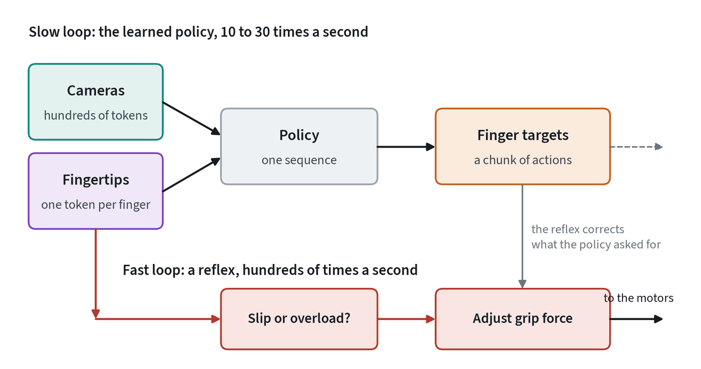

Why hands are a separate problem
Most robot learning results use a parallel gripper: two fingers and one number, open or closed. It picks things up and puts them down. It cannot turn a key, use scissors, or shift an object in its grasp without setting it down. Those need several fingers, and a hand changes every part of the pipeline at once: the hardware, how data is collected, what the policy has to sense, and how many numbers it outputs at every step.
This note goes through each of those in turn, with real hardware and its published specifications.
What a robot hand is made of





Four design decisions account for most of the differences between hands.
- How many joints are driven. A fully actuated hand has a motor for every joint and can place each finger segment independently. An under-actuated hand has fewer motors than joints. One motor curls a whole finger, and the segments wrap around whatever they meet. That makes a secure grasp easy and precise finger placement impossible.
- Where the motors are. Motors inside the fingers and palm make a self-contained hand that is thick and heavy at the fingertips. Motors in the forearm, pulling tendons, make slim fingers and a hand that needs a forearm, with cables that stretch and wear.
- How force reaches the joint. Direct drive and low gearing let the motor feel what the finger touches, and let the finger give way on impact. High gearing and screw-type linear actuators are strong and compact, and are stiff, slow to respond and blind to contact.
- The thumb. Most useful grasps need a thumb that can swing across to oppose the fingers. How many of the thumb’s joints are driven is the first thing to check on a specification sheet.
The fundamentals note explains why stiffness and compliance matter so much once a robot touches something.
Real options


| Hand | Fingers | Driven / joints | Drive | Weight | Touch sensing | Notes |
|---|---|---|---|---|---|---|
| Inspire RH56 | 5 | 6 / 12 | Linear actuators and linkages | about 0.54 kg | On some versions | Compact and widely fitted to humanoids |
| PSYONIC Ability Hand | 5 | 6 | Motors in the fingers | about 0.49 kg | Fingertip sensors | Designed as a prosthesis; sold in a robotics edition |
| Unitree Dex3-1 | 3 | 7 / 7 | Motors in the hand | about 0.71 kg | 33 sensors on the tactile version | Thumb with 3 joints, two fingers with 2 each |
| Schunk SVH | 5 | 9 / 20 | Motors in the hand, coupled joints | 1.3 kg | None as standard | Industrial product, the size of a human hand |
| Allegro Hand V4 | 4 | 16 / 16 | A motor at every joint | about 1.1 kg | Add-on skins available | Position and current control; a long-standing research standard |
| LEAP Hand | 4 | 16 / 16 | Off-the-shelf servos at every joint | not confirmed | None as standard | Open design; about $2,000 in parts and four hours to assemble |
| Unitree Dex5-1 | 5 | 16 / 20 | Motors in the hand | about 1.0 kg | 94 force sensors on the tactile version | Lifts about 3.5 kg palm-down |
| Shadow Dexterous Hand | 5 | 20 / 24 | Tendons from motors in the forearm | 4.3 kg with forearm | Tactile fingertips on thumb and index | The closest to a human hand’s range of motion |
These figures come from the makers’ pages, the LEAP Hand paper and published listings, checked in November 2026. Versions change and resellers disagree, so confirm against the current data sheet before buying. Humanoid makers also build their own hands. Tesla’s latest is reported to have 22 degrees of freedom with the actuators in the forearm, a figure that comes from press coverage and not from a published data sheet.


Choosing one
- Start from the task. Picking, placing and holding tools need a secure grasp, and six motors is enough. Turning, re-gripping and using fingers one at a time need independent joints.
- Count the hours between repairs. A hand that fails every few hours cannot collect a dataset. Ask who can repair it, how long that takes, and what a finger costs.
- Check the control interface. Some hands accept only position targets. Others also offer current or torque control, which is what allows gentle and force-aware grasping.
- Check the weight against the arm. A 1 kg hand on an arm rated for 3 kg leaves 2 kg for the object.
- Look for a simulation model. A hand with an accurate, maintained simulation model can be used for reinforcement learning and for testing. One without cannot.
- Prefer what others use. Shared hardware means shared code, datasets and retargeting tools.
Connecting a hand to the action head
For the policy, a hand is a longer action. How that action is written decides how much data the policy needs and how well anything transfers.


| Representation | What the policy outputs | Strength | Weakness |
|---|---|---|---|
| Joint targets | An angle for every driven joint | Nothing is lost; the hand can do anything it is capable of | The largest action, tied to one hand |
| Motor commands | One number per motor of an under-actuated hand | Small, and the mechanism handles the wrapping | No control of individual segments |
| Hand shapes | A few numbers that blend learned whole-hand postures | Very small; easy to learn from little data | Fine finger motion cannot be expressed |
| Fingertip targets | A 3D point for each fingertip, relative to the wrist | Means the same on different hands; matches how contact is described | Needs a solver; the solver’s choices are outside the policy |
The hand-shapes idea rests on a finding about people. When human grasps are recorded and analysed, two or three underlying patterns account for most of the variation in hand posture. Hands mostly move in coordinated shapes, not joint by joint, so a handful of numbers reaches most everyday grasps. It does not reach the rest, which is exactly the fine in-hand motion that dexterous hands are bought for.


That growth has four practical consequences.
- The kind of action head matters more. A head that writes actions as tokens pays for every number, so its output gets long and slow unless whole chunks are compressed into a few tokens. A flow-matching or diffusion head produces the whole vector in each refinement step, so a wider action costs it almost nothing in time. This is one reason those heads dominate work with hands.
- Normalise each joint separately. Finger joints have very different ranges. The basics note shows what happens when values on different scales share one loss.
- Arm and hand must be one action. Reaching and pre-shaping the fingers happen together. Predicting them in one chunk keeps them coordinated. Separate policies for arm and hand drift apart.
- Pretraining on grippers helps only partly. Large robot datasets are gripper data. They teach a policy where to reach and what the task is. The finger motion has to come from hand data.
Under-actuated hands add one more wrinkle. The policy commands the motor, and the finger’s final shape depends on what it touches. The body state the policy sees should therefore include the measured joint positions where the hand reports them, not just the last command.
Retargeting: a human hand is not a robot hand
Dexterous data almost always starts with a person’s hand. The person’s fingers and the robot’s differ in length, joint count and thumb placement, so the motion has to be translated. That translation is called retargeting.


Copying joint angles keeps the hand’s shape and loses the contact. Matching fingertip positions keeps the contact, which is what manipulation depends on, and changes the shape. Most systems match fingertips, with extra terms to keep the thumb opposed to the fingers and to avoid the fingers colliding. No mapping is exact, and the leftover error is one reason hand policies need more data than gripper policies.
Collecting data for hands
| Method | How it works | Strength | Limit |
|---|---|---|---|
| Teleoperation | A person’s hand is tracked by a glove or a headset and the robot hand mirrors it | Real robot actions and observations | Slow; the operator feels nothing; needs the robot |
| Portable motion capture | The person wears tracking gloves and a camera and works with their own hands. DexCap is an example: it tracks wrist and fingers and records the scene in 3D. | Fast, natural, collected anywhere | The data is of a human hand; it has to be retargeted, and the camera sees a hand, not a robot |
| Wearable exoskeleton | The person wears a frame that limits their hand to motions the robot hand can make. DexUMI is an example: it also replaces the human hand in the video with the robot hand. | Closes both the motion gap and the visual gap; the person feels the contact | One exoskeleton design for each robot hand |
| Reinforcement learning in simulation | The policy learns by trial and error on a simulated hand | No human data; has produced skilled in-hand rotation | Contact is hard to simulate; transfer needs care |
The trend is away from teleoperating the robot and toward capturing people directly, because a person using their own hands works much faster and feels what they are doing.
Using touch with a hand
Fingers cover the object they hold, so the camera loses sight of it exactly when it matters. Touch fills that gap, and a hand has room for a lot of it.
| Sensor type | How it works | Reports | Trade-off |
|---|---|---|---|
| Camera-based | A small camera watches a soft gel skin from inside | A detailed image of the contact: shape, texture, shear | Thick, so mostly fingertips; too slow for vibration |
| Magnetic skin | Magnets in soft rubber move over magnetic field sensors | Force in three directions at each point, at high rates | Disturbed by nearby magnets and motors; needs calibration |
| Pressure arrays | A grid of cells whose resistance or capacitance changes when pressed | Where contact is and roughly how hard | Little about sideways force; coarse |
| Motor current | The effort each finger motor is making | Whole-finger contact and load, with no added sensor | Only on hands with low gearing; no location |
The photo of the Allegro hand above shows the second kind: thin skins on every finger segment, each reporting force in three directions.


- As policy input. Each sensor patch is encoded into one or a few tokens, usually one group per finger, and joins the camera and body-state tokens. The policy then learns things a camera cannot supply: whether the object is seated, which way it is tilting in the grasp, when a peg has touched down.
- As a reflex. A slip must be answered within tens of milliseconds, faster than a policy that plans in chunks. A small rule beneath the policy, tighten when vibration or sideways force rises, loosen when force exceeds a limit, handles this at the rate of the sensor. The policy sets the intent and the reflex keeps the grip.
- During data collection. Feeding touch back to the operator, through vibration in a glove or directly through an exoskeleton, produces gentler and more consistent demonstrations.
- As a success signal. Contact on the expected fingers at the expected time is a cheap check that a grasp happened.
Two cautions carry over from the note on senses, which shows what these signals look like and how they are turned into tokens. A policy trained with cameras and touch tends to lean on the cameras, so drop the camera input at random during training and then test with the touch input removed. And sensors of the same model differ from one another and wear, so calibrate each one and expect to replace skins.
How hand policies are trained
- Imitation with a generative action head. The mainstream route: demonstrations from teleoperation or wearables, and a flow-matching or diffusion head that outputs arm and hand together in chunks.
- Reinforcement learning in simulation. The route behind the best in-hand rotation results. Thousands of simulated hands practise with randomised physics, and the policy is then run on the real hand.
- Pretraining on human video. The only data source large enough to cover the variety of things hands do. It supplies what to do and where to touch, and robot data supplies how.
These are combined in practice: video for breadth, demonstrations for the task, and practice on the robot to make it reliable. The notes on reinforcement learning and robot data cover each part.
Open questions
- Is a five-finger hand needed? Many useful tasks need two or three fingers. A human-like hand fits human tools and human video. It is not clear how much of the benefit comes from which.
- How should the action be written? Joint angles, a handful of hand shapes, or fingertip positions. Smaller choices learn faster and can do less, and no one representation has won.
- Can human video carry the load? It is the only source large enough. How much robot data is needed on top is unsettled.
- How much does touch add? Results are strong on specific contact-rich tasks and mixed in general, partly because there is no large shared touch dataset.
- How is success measured? There are few shared benchmarks, and results on different hands are hard to compare.
Common mistakes
- Choosing the most capable hand. A simpler hand that survives a day of data collection teaches more.
- Copying joint angles. Check where the fingertips end up, not whether the pose looks right.
- Treating the hand as a separate policy. Arm and fingers move together and should be predicted together.
- Adding touch and assuming it is used. Test the policy with the touch input removed. If nothing changes, it was ignored.
Terms
- Degrees of freedom
- The number of independent ways a mechanism can move.
- Under-actuated
- Having fewer motors than joints, so some joints move together.
- Tendon drive
- Moving a joint with a cable pulled by a motor located elsewhere, usually in the forearm.
- Retargeting
- Converting a human hand’s motion into the motion of a robot hand.
- Hand synergy
- A coordinated whole-hand posture; a few of them, blended, reproduce most grasps.
- In-hand manipulation
- Moving an object within the hand without putting it down.
Further reading
- Shaw et al., 2023. LEAP Hand: Low-Cost, Efficient, and Anthropomorphic Hand for Robot Learning.
- Wang et al., 2024. DexCap: Scalable and Portable Mocap Data Collection System for Dexterous Manipulation.
- Xu et al., 2025. DexUMI: Using Human Hand as the Universal Manipulation Interface for Dexterous Manipulation.
- Qin et al., 2023. AnyTeleop: A General Vision-Based Dexterous Robot Arm-Hand Teleoperation System.
- OpenAI, 2018. Learning Dexterous In-Hand Manipulation.
- Santello, Flanders and Soechting, 1998. Postural Hand Synergies for Tool Use. Journal of Neuroscience 18(23).
- Lambeta et al., 2020. DIGIT: A Novel Design for a Low-Cost Compact High-Resolution Tactile Sensor.
- Bhirangi et al., 2024. AnySkin: Plug-and-play Skin Sensing for Robotic Touch.
- Huang et al., 2024. 3D-ViTac: Learning Fine-Grained Manipulation with Visuo-Tactile Sensing.